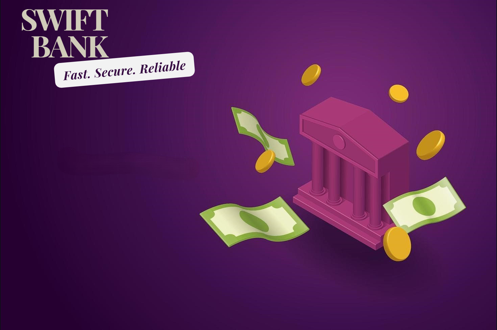

A comprehensive Java Swing application for managing banks, branches, customers, accounts, transactions, and loans with a user-friendly interface.

Admin and customer login with encrypted PIN protection.
Perform deposits, withdrawals and track transaction history.
Create and manage loans with repayment tracking.
Get the source code and all necessary files:
Run the database setup script to create all necessary tables:
Use the build script for quick compilation:
Or compile manually using: